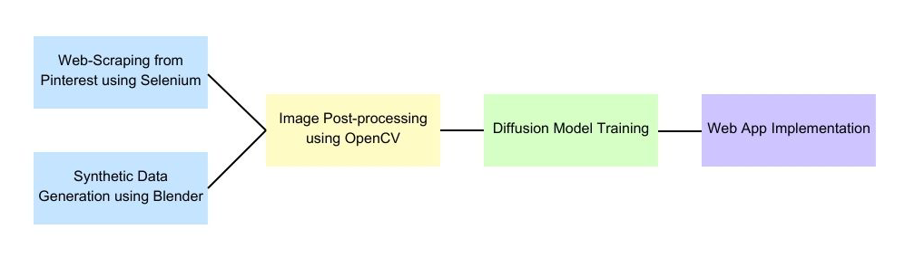
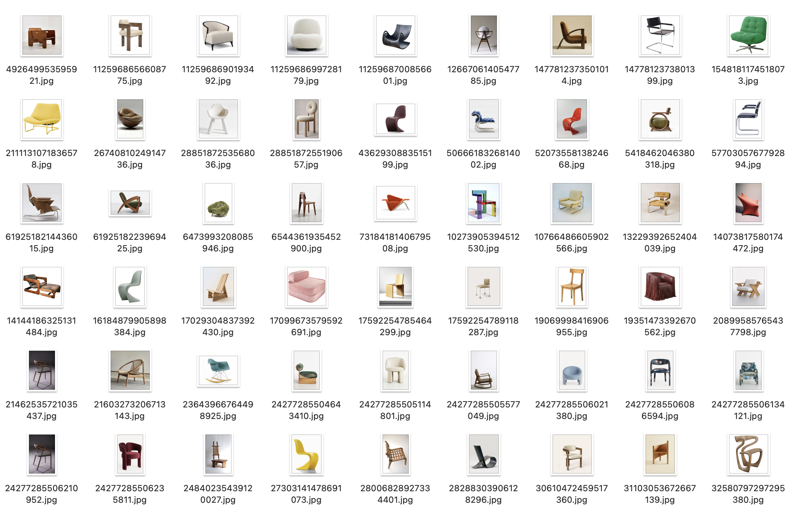
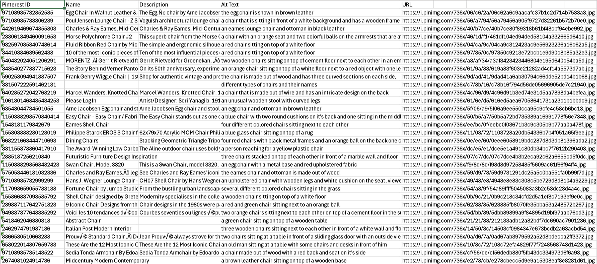
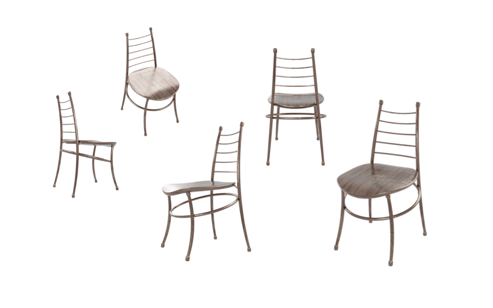
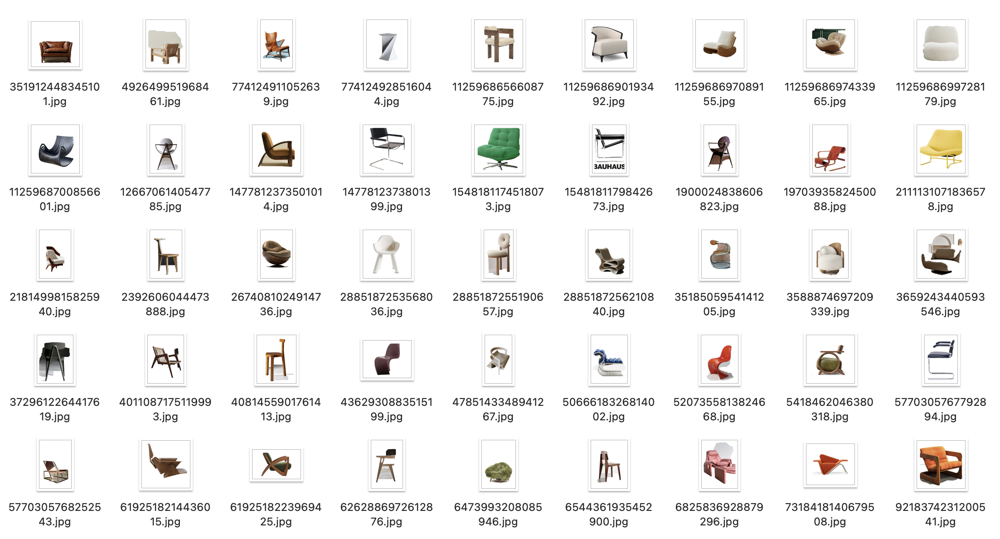
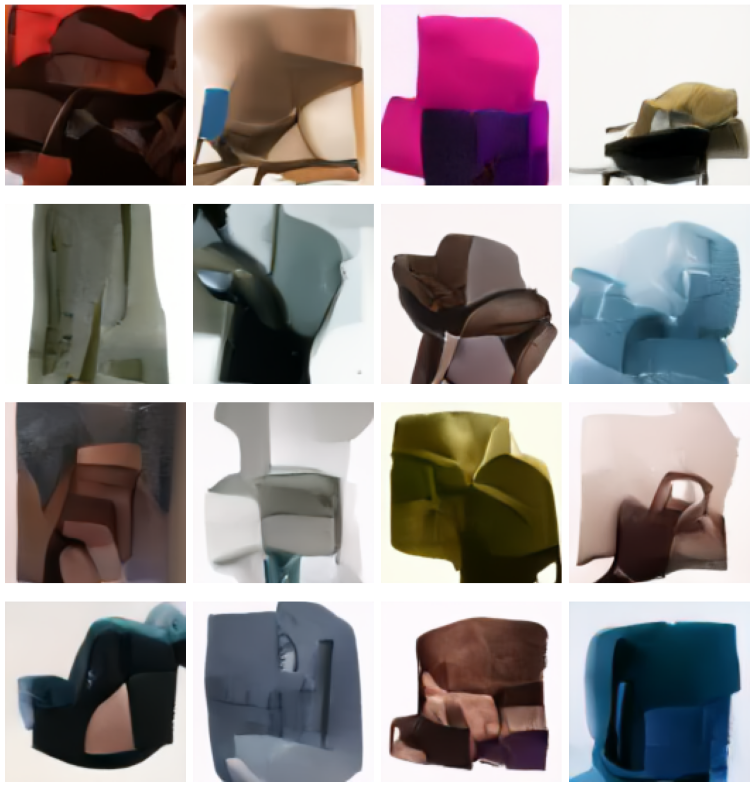

def scrape_pinterest(num_images=500):
driver.get("https://www.pinterest.com/search/pins/?q=vitra%20chair%20design")
time.sleep(5) # Wait for page to load
pin_data = []
scroll_count = 0
max_scrolls = 100
while len(pin_data) < num_images and scroll_count < max_scrolls:
pin_elements = driver.find_elements(By.CSS_SELECTOR, "div[data-test-id='pin-with-alt-text']")
for pin in pin_elements:
if len(pin_data) >= num_images:
break
try:
a_tag = pin.find_element(By.TAG_NAME, "a")
href = a_tag.get_attribute("href")
if "/pin/" in href:
pin_id = href.split("/pin/")[1].split("/")[0]
if not any(p[0] == pin_id for p in pin_data):
alt_text = a_tag.get_attribute("aria-label")
pin_data.append((pin_id, alt_text))
print(f"Found pin: {pin_id} - {alt_text}")
except Exception as e:
print(f"Error extracting pin data: {e}")
if len(pin_data) < num_images:
driver.execute_script("window.scrollBy(0, 1000);")
time.sleep(2)
scroll_count += 1
print(f"Extracted data for {len(pin_data)} pins")
for idx, (pin_id, alt_text) in enumerate(pin_data):
try:
pin_url = f"https://www.pinterest.com/pin/{pin_id}/"
driver.get(pin_url)
# Extract name, description, and image URL
...
if img_url:
img_filename = f"{pin_id}.jpg"
img_path = os.path.join(image_folder, img_filename)
response = requests.get(img_url, headers=headers, timeout=10)
if response.status_code == 200:
with open(img_path, "wb") as f:
f.write(response.content)
print(f"Downloaded image: {img_filename}")
except Exception as e:
print(f"Error processing pin {pin_id}: {e}")Overview
Chairness is a web application designed to generate images of unique and creative chair designs. The application leverages a combination of web-scraped chair images from e-commerce platforms and synthetically generated chair images from 3D models using automated Blender scripts. These images are used to train a diffusion network, which powers the image generation process.
You can find the link to our Github repository here: https://github.com/shruaibylsh/chairness
This is a flow chart illustrating the structure of our project: 
Data Acquisition
Web-Scraping from Pinterest using Selenium
We implemented a custom scraper to collect chair images and metadata from Pinterest. The scraper navigates to search results for specified keywords such as “designer chairs” and collects: 1. Pinterest ID 2. Chair name 3. Description 4. Alt text 5. Image URL
The implementation focuses on finding pins with the specific CSS selector div[data-test-id=‘pin-with-alt-text’] and then visiting each individual pin page to extract more detailed information.
This is a code snippet for our scraper:
These are images of our scraped chairs and an example of the csv file we have compiled:  
Synthetic Data Generation using Blender
We then wrote a script that automates the generation of synthetic chair images using Blender, a powerful 3D rendering tool. It imports 3D chair models (e.g., .obj, .fbx, .blend, .gltf) and renders them from multiple angles and elevations to create a diverse dataset. The script sets up a Blender scene with a three-point lighting system, a camera, and a transparent background for high-quality renders. It also supports material variations, allowing for different textures and colors to be applied to the chair models, further enhancing dataset diversity.
The script processes each chair model by normalizing its size, centering it in the scene, and applying textures from a specified directory. It then renders the chair from 12 horizontal angles and 3 elevation angles, producing 36 images per model. GPU-accelerated rendering with Cycles ensures efficient and high-quality output. The resulting images are saved in PNG format with transparency, ready for use in training machine learning models.
Here is a code snippet:
def setup_scene():
"""Set up the Blender scene with lighting and camera."""
bpy.ops.object.select_all(action='DESELECT')
bpy.ops.object.select_by_type(type='MESH')
bpy.ops.object.select_by_type(type='LIGHT')
bpy.ops.object.select_by_type(type='CAMERA')
bpy.ops.object.delete()
# Add camera and lights
bpy.ops.object.camera_add(location=(0, -3, 1.5), rotation=(math.radians(75), 0, 0))
camera = bpy.context.active_object
bpy.context.scene.camera = camera
# Three-point lighting setup
bpy.ops.object.light_add(type='AREA', radius=3, location=(3, -2, 3))
key_light = bpy.context.active_object
key_light.data.energy = 500
bpy.ops.object.light_add(type='AREA', radius=2, location=(-3, -2, 2))
fill_light = bpy.context.active_object
fill_light.data.energy = 300
bpy.ops.object.light_add(type='AREA', radius=2, location=(0, 3, 2))
rim_light = bpy.context.active_object
rim_light.data.energy = 400
return camera
def import_chair_model(filepath):
"""Import and normalize a chair model."""
bpy.ops.object.select_all(action='DESELECT')
bpy.ops.object.select_by_type(type='MESH')
bpy.ops.object.delete()
ext = os.path.splitext(filepath)[1].lower()
if ext == '.fbx':
bpy.ops.import_scene.fbx(filepath=filepath)
elif ext == '.obj':
bpy.ops.import_scene.obj(filepath=filepath)
else:
raise ValueError(f"Unsupported format: {ext}")
chair = bpy.context.active_object
chair.scale = (2, 2, 2)
bpy.ops.object.transform_apply(scale=True)
return chair
def render_chair_angles(chair, output_path, num_angles=12):
"""Render the chair from multiple angles."""
camera = bpy.context.scene.camera
bpy.ops.object.empty_add(type='PLAIN_AXES', location=(0, 0, chair.dimensions.z / 2))
target = bpy.context.active_object
constraint = camera.constraints.new(type='TRACK_TO')
constraint.target = target
for angle_idx in range(num_angles):
angle = 2 * math.pi * angle_idx / num_angles
x = 3 * math.sin(angle)
y = 3 * math.cos(angle)
camera.location = (x, y, 1.5)
bpy.context.scene.render.filepath = os.path.join(output_path, f"angle_{angle_idx:02d}.png")
bpy.ops.render.render(write_still=True)
bpy.ops.object.select_all(action='DESELECT')
target.select_set(True)
bpy.ops.object.delete()Here are some images we have generated through this script: 
Data Cleaning: Image Post-Processing using OpenCV
We perform image post-processing using OpenCV to remove backgrounds from chair images, a crucial step in preparing the dataset for training the diffusion network. The remove_background_grabcut function uses the GrabCut algorithm to segment the chair from the background by defining a bounding box. The segmented chair is placed on a white background, ensuring uniformity across the dataset. This preprocessing enhances dataset quality, making it easier for the model to learn chair designs.
The process_folder function automates background removal for all images in a folder, saving processed images to an output folder. This batch processing ensures efficiency and consistency, critical for training high-quality generative models. By standardizing the dataset, the code improves the model’s ability to generate unique and realistic chair designs.
Here is a code snippet:
# Pseudocode for Image Post-Processing Workflow
def remove_background_grabcut(image_path, output_path):
# Load the image
image = cv2.imread(image_path)
if image is None:
print(f"Error: Could not load image {image_path}")
return
# Initialize mask and bounding box
mask = np.zeros(image.shape[:2], np.uint8)
height, width = image.shape[:2]
rect = (50, 50, width - 100, height - 100) # Bounding box around the chair
# Apply GrabCut algorithm
bgd_model = np.zeros((1, 65), np.float64)
fgd_model = np.zeros((1, 65), np.float64)
cv2.grabCut(image, mask, rect, bgd_model, fgd_model, 5, cv2.GC_INIT_WITH_RECT)
# Create a mask for the foreground
mask2 = np.where((mask == 2) | (mask == 0), 0, 1).astype('uint8')
# Apply mask to isolate the chair
result = image * mask2[:, :, np.newaxis]
# Place the chair on a white background
white_background = np.ones_like(image, np.uint8) * 255
final_result = np.where(mask2[:, :, np.newaxis] == 1, result, white_background)
# Save the result
cv2.imwrite(output_path, final_result)
def process_folder(input_folder, output_folder):
...
for filename in os.listdir(input_folder):
if filename.endswith(".jpg") or filename.endswith(".png"):
input_path = os.path.join(input_folder, filename)
output_path = os.path.join(output_folder, filename)
remove_background_grabcut(input_path, output_path)
print(f"Processed {filename}")
if __name__ == "__main__":
...
process_folder(input_folder, output_folder)Here are the images we have processed using the code: 
Model Training: Diffusion Model for Chair Image Generation
We then fine-tune a pre-trained diffusion model to generate high-quality chair images from a dataset of approximately 900 examples. Diffusion models work by gradually denoising random noise into coherent images, learning to reverse a process that adds noise to data. We use transfer learning to adapt a pre-trained UNet2DModel from the diffusers library, freezing early layers to retain general visual features while fine-tuning later layers for chair-specific details. The model is trained to predict and remove noise from noisy images, enabling it to generate realistic chair designs.
A custom ChairDataset class is implemented to load and preprocess chair images, resizing them to 128×128 pixels and normalizing pixel values. The training loop adds noise to images, trains the model to predict this noise, and periodically generates sample images to monitor progress. A noise scheduler controls the diffusion process, ensuring smooth denoising. After training, the model generates clean, high-quality chair images by iteratively removing noise from random inputs.
Here are some code snippets:
class ChairDataset(Dataset):
def __init__(self, root_dir, image_size=128):
self.root_dir = root_dir
self.image_size = image_size
self.image_files = [os.path.join(root_dir, f) for f in os.listdir(root_dir)
if f.lower().endswith(('.jpg', '.jpeg', '.png'))]
self.transforms = transforms.Compose([
transforms.Resize(image_size),
transforms.CenterCrop(image_size),
transforms.ToTensor(),
transforms.Normalize([0.5], [0.5]) # Normalize to [-1, 1]
])
def __len__(self):
return len(self.image_files)
def __getitem__(self, idx):
img_path = self.image_files[idx]
image = Image.open(img_path).convert('RGB')
return self.transforms(image)
def setup_diffusion_model(image_size=128):
model = UNet2DModel.from_pretrained("google/ddpm-celebahq-256")
model.config.sample_size = image_size
for name, param in model.named_parameters():
if "down_blocks.0" in name or "down_blocks.1" in name:
param.requires_grad = False # Freeze early layers
noise_scheduler = DDPMScheduler(num_train_timesteps=1000)
return model, noise_scheduler
def train_diffusion_model(model, noise_scheduler, dataset, num_epochs=30):
train_dataloader = DataLoader(dataset, batch_size=16, shuffle=True)
optimizer = AdamW(model.parameters(), lr=1e-5)
model, optimizer, train_dataloader = accelerator.prepare(model, optimizer, train_dataloader)
for epoch in range(num_epochs):
model.train()
for batch in train_dataloader:
clean_images = batch
noise = torch.randn(clean_images.shape).to(clean_images.device)
timesteps = torch.randint(0, 1000, (clean_images.shape[0],), device=clean_images.device).long()
noisy_images = noise_scheduler.add_noise(clean_images, noise, timesteps)
noise_pred = model(noisy_images, timesteps).sample
loss = F.mse_loss(noise_pred, noise)
accelerator.backward(loss)
optimizer.step()
optimizer.zero_grad()
if global_step % 500 == 0:
generate_sample_images(model, noise_scheduler, 4, image_size, f"samples/step_{global_step}.png")
global_step += 1
def generate_sample_images(model, noise_scheduler, num_images, image_size, output_path):
pipeline = DDPMPipeline(unet=model, scheduler=noise_scheduler).to(device)
images = pipeline(batch_size=num_images, generator=torch.Generator(device=device).manual_seed(42)).images
for i, image in enumerate(images):
image.save(f"{output_path}_{i}.png")And here are a few examples of the chair images we have generated: 